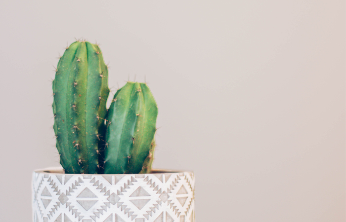

 サボテン
多肉植物の中のサボテン科の植物。アメリカ、メキシコ、中米が原産。サボテンは乾燥した砂漠や、雨の少ない土地、高山などの他の植物が育ちにくい過酷な環境でも生育できるよう、葉、茎、根に水と栄養分を蓄えています。
ポトス
観葉植物のポトスはつる性の着生植物で、熱帯地方で大きな木に這い上がるように育ち、長さ数十mまで伸びます。一般に観賞しているのは幼葉で、成葉になると羽状に切れ込みが入ります。
エケベリア（多肉植物）
主に乾燥地域に生育しており、原産地は世界中に分布しています。特に、アフリカ南部（南アフリカ共和国、ナミビア）や北米南部（メキシコ）、マダガスカル島などに多くの種類が自生しています。おなじみのキクやユリの仲間から裸子植物にいたるまで、数千種類の植物が含まれています。